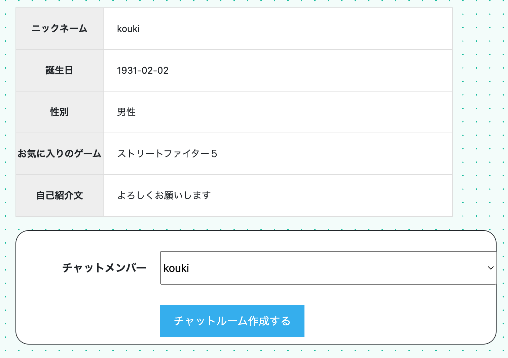

GAME CONNECT（ゲーマー同士のマッチングアプリ）

開発環境
Ruby / Ruby on Rails / MySQL / GitHub / Heroku / Visual Studio Code
-
概要
制作時間 80時間 URL https://game-connect-37408.herokuapp.com/ ID admin PASS 2222 -
動作テスト
テスト用アカウント
mail 111111@gmail.com PASS a11111
OUTLINEアプリケーションの概要
オリジナルアプリケーションとして、ゲーム仲間を探すアプリケーションを開発しました。
主な機能は、ユーザー登録機能、どんなゲームをどのように一緒にプレイしたいかを呼びかける投稿機能、ユーザー間でコミュニケーションを取るためのチャット機能です。
トップページにアクセスすると、トップバーにはユーザー登録ボタン、ログインボタン、ユーザー一覧へのリンクが表示され、サイドバーには投稿ボタン、メインスペースには投稿された内容がユーザー名と共に一覧で表示されています。ユーザー登録後にはトップバーへはチャットページへのリンクが出現し、ログインボタンはログアウトボタンへ、新規登録ボタンは自身のユーザー登録詳細表示画面へ遷移するユーザー名のボタンに変化します。
サイドバーの投稿ボタンから投稿フォームへ遷移し、ゲームタイトルとフレンド募集の概要を記入することができます。投稿後はトップページへ遷移し自身の投稿にだけ編集、削除ボタンが表示されます。
チャットページではサイドバーの投稿ボタンがチャット作成ボタンへと変化しその下には作成済みのチャットルームが表示されます。チャット作成ボタンからチャットルーム作成ページへ遷移し、プルダウンから自身を除く現在登録されているユーザーニックネームから1名を選択し、チャットルームを作成することができます。チャットルーム作成後は相手ユーザーのニックネームがルーム名となっていて、クリックすることでチャットルームへ遷移し、メッセージのやり取りをすることができます。また、ルームには削除ボタンが出現し、クリックにてそのルームを削除することもできます。
-
開発に至った経緯
私は様々なゲームを趣味としてプレイしていますが最近は色々とジャンルも増えてyoutubeや在宅時間の増加などの影響もあり興味のあるゲームの幅も広がってきました。
しかし知り合いや周りには一緒にできる人がいないゲームも多く、SNSなどで探す場合も効果はあまり高くないと感じました。
そこでゲームの友達探しに特化したコミュニケーションアプリの作成をしたいと考えました。
-
開発で工夫したこと
1点目がトップバーとサイドバーを基本的には固定し、トップバーには各主要なページに遷移できるリンクを、サイドバーにはそのページにて選択するボタンなどを設置することで使い勝手を意識した作りにしたことです。
2点目はユーザー詳細画面から直接チャットルームを作成できるようにしたことです。こうすることでユーザー詳細画面からコンタクトを取りたくなった場合にチャットルームを経由せずにワンクリックで直接ルームの作成がでるようになり、使いやすくできたと思います。
-
今後実装したいと思っていること
現段階で実装したいと考えている機能は5つあります。
1点目は検索機能です。投稿数が多くなればなるほどどんな応募があるか探しにくくなるのでユーザーが見たい応募内容を絞り込めるようにしたいと考えています。
2点目は投稿へのコメント機能です。チャット機能は実装済みですがよりコミュニケーションが取りやすい機能だと考えています。
3点目はユーザーフォロー機能です。興味のある相手をフォローすることで動向を確認しやすくしたり相手への意思表示がよりしやすくなると考えています。
4点目は投稿へのお気に入り登録機能です。こちらもコメントした投稿の反応を後追いしやすくしたり気になった投稿を後で確認しやすくしたりするためにあった方が良い機能だと考えています。
5点目はメッセージの通知機能です。チャットにて連絡を取り合う際に通知があれば気付きやすくなるため円滑なコミュニケーションの助けになると考えています。